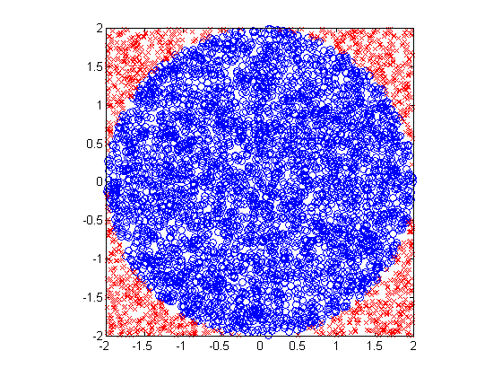

Demo of monte carlo integration for estimating pi
r=2; S=5000; xs = unifrnd(-r,r,S,1); ys = unifrnd(-r,r,S,1); rs = xs.^2 + ys.^2; inside = (rs <= r^2); samples = 4*(r^2)*inside; Ihat = mean(samples) piHat = Ihat/(r^2) se = sqrt(var(samples)/S) figure(1);clf outside = ~inside; plot(xs(inside), ys(inside), 'bo'); hold on plot(xs(outside), ys(outside), 'rx'); axis square printPmtkFigure('mc-pi');
Ihat =
12.2976
piHat =
3.0744
se =
0.0954
